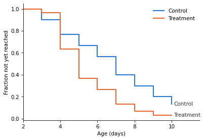
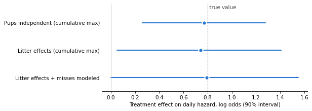

Time to a Milestone When You Can’t Tell the Subjects Apart#
Here’s a question from Cross Validated, the statistics Q&A site:
I am trying to perform a survival curve/time to event analysis to determine if two treatments cause animal offspring to meet developmental milestones at different ages. […] I record their behavior daily with a score of 0,1, or 2 (0=not achieved, 1=partial, 2=completely achieved). The problem is that I cannot ID individual offspring every day. […] Does this cause any problems for Kaplan Meier anaylsis?
To restate the setup: a researcher compares two treatments by the age at which animal offspring reach a developmental milestone. Each litter of pups gets one treatment, and there are several litters per treatment. Every day from P3 to P10, each pup is scored 0 (not achieved), 1 (partial) or 2 (achieved). The pups can’t be told apart from day to day, so the rows of the daily table aren’t individuals. And now and then a pup that scored 2 one day doesn’t show the behavior the next.
Three questions come up:
Do we need individual identities? For time to a first event, no: the count of pups that have reached the milestone in each litter on each day is enough. (What we actually observe is the count that show it on a given day, which can be lower – that’s question 3.)
What is the unit of analysis? The treatment is assigned to litters, so this is a cluster-randomized design. Treating pups as independent can overstate the evidence.
What about the pups that “go back”? We’ll assume that once a pup acquires the ability, it keeps it during the observation period, but it might not demonstrate it every day. Under that assumption, a pup that “goes back” is a missed observation, not a real reversal, and we can model the observation process instead of editing the data. (If pups could really lose the ability, the model would need transitions in both directions.)
A Bayesian model handles all three at once. I’ll use simulated data, so we can check whether the models recover the true values.
Click here to run this notebook on Colab.
I’ll download a utilities module with some of my frequently-used functions, install PyMC if we’re running on Colab, and then import the libraries we’ll need.
Simulated data#
Twelve litters of five pups, six per treatment, observed from P3 to P10. Each pup reaches the milestone on some day; the daily chance of reaching it (the hazard) rises with age, is higher under treatment, and varies from litter to litter.
Each day, a pup’s score depends on whether it has reached the milestone:
A pup that has reached it scores 2 with probability 0.85; otherwise it scores 1 (probability 0.06) or 0 (probability 0.09).
A pup that hasn’t reached it scores 1 with probability 0.4 or 0 with probability 0.6.
So a 2 always means the pup has reached the milestone, but a 0 or 1 doesn’t mean it hasn’t. The models below use only the count of 2s. In this simulation, the partial scores carry no information, but in real data they might – a pup that scores 1 might be close to the milestone. Using them would take a model of how partial scores relate to development, which is a simplification I’ll leave out.
rng = np.random.default_rng(17)
n_pups = 5
days = np.arange(3, 11) # P3 to P10
n_per_arm = 6
n_litters = 2 * n_per_arm
treatment = np.repeat([0, 1], n_per_arm)
# true values, which the models below try to recover
a_true, c_true, b_true = -2.0, 0.45, 0.8 # baseline, daily increase, treatment (log odds)
sigma_true = 0.5 # litter-to-litter variation
p_true = 0.85 # probability that a pup that has the milestone shows it
u_true = rng.normal(0, sigma_true, n_litters)
def simulate():
scores = np.zeros((n_litters, len(days), n_pups), dtype=int)
for i in range(n_litters):
achieved = np.zeros(n_pups, dtype=bool)
for t, d in enumerate(days):
eta = a_true + c_true * (d - 3) + b_true * treatment[i] + u_true[i]
achieved |= rng.random(n_pups) < 1 / (1 + np.exp(-eta))
shows = achieved & (rng.random(n_pups) < p_true)
partial = rng.random(n_pups) < 0.4
daily = np.where(shows, 2, np.where(partial, 1, 0))
scores[i, t] = rng.permutation(daily) # rows are not individuals
return scores
scores = simulate()
Here is one litter as the researcher sees it: each row is a pup on that day, but row 1 on P5 needn’t be row 1 on P6.
pd.DataFrame(scores[0].T, columns=[f"P{d}" for d in days])
| P3 | P4 | P5 | P6 | P7 | P8 | P9 | P10 | |
|---|---|---|---|---|---|---|---|---|
| 0 | 0 | 2 | 1 | 2 | 2 | 2 | 2 | 2 |
| 1 | 0 | 1 | 1 | 2 | 2 | 2 | 2 | 2 |
| 2 | 2 | 2 | 2 | 1 | 2 | 2 | 2 | 2 |
| 3 | 0 | 0 | 2 | 2 | 0 | 2 | 1 | 2 |
| 4 | 1 | 0 | 2 | 2 | 1 | 0 | 2 | 2 |
The counts are all we need#
For time to a first event, it doesn’t matter which pup reached the milestone, only how many. So we reduce each litter-day to y, the number of pups scoring 2.
y = (scores == 2).sum(axis=2)
pd.DataFrame(y, columns=[f"P{d}" for d in days], index=pd.Index(treatment, name="treatment"))
| P3 | P4 | P5 | P6 | P7 | P8 | P9 | P10 | |
|---|---|---|---|---|---|---|---|---|
| treatment | ||||||||
| 0 | 1 | 2 | 3 | 4 | 3 | 4 | 4 | 5 |
| 0 | 1 | 3 | 3 | 4 | 5 | 2 | 4 | 4 |
| 0 | 1 | 1 | 2 | 2 | 3 | 2 | 3 | 3 |
| 0 | 0 | 0 | 1 | 1 | 3 | 2 | 4 | 5 |
| 0 | 0 | 0 | 0 | 0 | 1 | 2 | 4 | 3 |
| 0 | 0 | 1 | 0 | 2 | 2 | 4 | 3 | 4 |
| 1 | 0 | 3 | 4 | 4 | 5 | 5 | 4 | 4 |
| 1 | 0 | 1 | 4 | 5 | 4 | 5 | 5 | 4 |
| 1 | 0 | 2 | 4 | 5 | 4 | 5 | 4 | 5 |
| 1 | 0 | 2 | 4 | 4 | 3 | 5 | 5 | 4 |
| 1 | 0 | 1 | 1 | 2 | 3 | 3 | 4 | 4 |
| 1 | 1 | 2 | 2 | 2 | 4 | 5 | 4 | 5 |
In a few places the count goes down, because a pup didn’t show the behavior that day. If we knew which pup was which, we could record the first day each one scored 2. Without identities, we can’t always reconstruct those event times. As an approximation, we’ll take the cumulative maximum of the daily counts. If pups don’t lose the milestone, that’s the minimum number that must have reached it by each day – but it can be too low. For example, if one pup scores 2 on P5 and doesn’t show it on P6, and a different pup scores 2 for the first time on P6, two pups have reached the milestone, but the count is 1 on both days.
From the reconstructed counts, we get the number of new events each day and the number still at risk, which is what a discrete-time survival analysis needs.
reached = np.maximum.accumulate(y, axis=1)
before = np.hstack([np.zeros((n_litters, 1), dtype=int), reached[:, :-1]])
new = reached - before
at_risk = n_pups - before
With these counts, we can compute an approximate Kaplan-Meier curve for each treatment. Later, we’ll develop a model that avoids the approximation.
def km(arm):
rows = treatment == arm
surv = np.cumprod(1 - new[rows].sum(axis=0) / at_risk[rows].sum(axis=0))
return surv
fig, ax = plt.subplots(figsize=(6, 4))
for arm, color, label in [(0, BLUE, "Control"), (1, ORANGE, "Treatment")]:
s = np.concatenate([[1.0], km(arm)]) # nobody has reached it before P3
ax.step(np.concatenate([[2], days]), s, where="post", color=color, lw=2, label=label)
ax.text(days[-1] + 0.1, s[-1], label, color="0.2", va="center")
ax.set_xlabel("Age (days)")
ax.set_ylabel("Fraction not yet reached")
ax.set_xlim(2, 11.5)
ax.legend(frameon=False)
ax.spines[["top", "right"]].set_visible(False);

The curves suggest that treated pups reach the milestone sooner. Setting the approximation aside for now, they are a reasonable description of the data. The problem comes when we ask how strong the evidence is. Treatment was assigned to litters, not pups, and pups in the same litter share a mother and a nest, so their development is likely to be correlated: if one pup in a litter is early, its littermates probably are too. So six litters of five pups provide less information than 30 independent pups would. Confidence intervals for the curves, and tests like survdiff, treat the pups as independent, so they can make us more confident about the treatment effect than the experiment justifies.
To account for the clustering, we’ll build a model of the daily probability that a pup reaches the milestone. We’ll fit it first with the pups treated as independent, then with litter effects that let the pace of development vary from litter to litter, and compare the results.
Model 1: discrete-time hazard, litter as the unit#
The model is a discrete-time survival analysis: each day, every pup that hasn’t reached the milestone has some chance of reaching it, and that chance depends on age, treatment, and litter. On day \(t\), a pup in litter \(i\) reaches it with probability \(h_{it}\):
where \(a\) is the log odds on P3 in the control group, \(c\) is how much the log odds increase per day, and \(b\) is the treatment effect. The new events in each litter on each day are \(\text{Binomial}(\text{at risk}_{it}, h_{it})\).
The litter effect \(u_i\) makes all the pups in litter \(i\) faster or slower together, which is how the model represents the correlation between littermates, and \(\sigma\) is how much litters vary. The model estimates \(\sigma\) from the data. If litters vary a lot, the difference between the treatment groups is judged against the differences between litters – and 6 litters per group is a much smaller sample than 30 pups. If they don’t vary much, \(\sigma\) is close to 0 and the result is about the same as treating the pups as independent.
Leaving out \(u_i\) gives the model that treats the pups as independent; we’ll fit both.
day_offset = days - 3
def hazard(litter_effects=True):
a = pm.Normal("a", -2, 1.5)
c = pm.Normal("c", 0, 0.5)
b = pm.Normal("b", 0, 1)
if litter_effects:
sigma = pm.HalfNormal("sigma", 1)
z = pm.Normal("z", 0, 1, shape=n_litters)
u = sigma * z
else:
u = pt.zeros(n_litters)
eta = a + c * day_offset[None, :] + b * treatment[:, None] + u[:, None]
return pm.math.invlogit(eta)
with pm.Model() as pooled:
h = hazard(litter_effects=False)
pm.Binomial("new", n=at_risk, p=h, observed=new)
idata_pooled = pm.sample(random_seed=1, progressbar=False)
with pm.Model() as clustered:
h = hazard(litter_effects=True)
pm.Binomial("new", n=at_risk, p=h, observed=new)
idata_clustered = pm.sample(random_seed=1, target_accept=0.95, progressbar=False)
NUTS[nutpie]: [a, c, b]
NUTS[nutpie]: [a, c, b, sigma, z]
Model 2: model the misses instead of correcting them#
Model 1 deals with the clustering, but it uses event counts reconstructed with the cumulative maximum, which is a lower bound on the number of pups that have reached the milestone. A pup that reaches the milestone and doesn’t show it that day is recorded late, on the first day it does show it – and as the example above shows, a miss can also hide another pup’s first appearance. Late events make development look slower than it is, so we expect Model 1 to underestimate the daily increase, \(c\). They could bias the estimated treatment effect, too.
The cumulative maximum treats what we see as the truth, corrected by hand. Instead, we can model the difference between the truth and what we see. Let \(N_{it}\) be the true number of pups in litter \(i\) that have reached the milestone by day \(t\), which we don’t observe:
\(N_{it}\) only goes up: \(N_{it} = N_{i,t-1} + \text{Binomial}(5 - N_{i,t-1},\ h_{it})\), with the same hazard as before.
What we see is how many of them show it that day: \(y_{it} \sim \text{Binomial}(N_{it},\ p)\).
This is a hidden Markov model with six states (0 to 5 pups). PyMC can’t sample discrete latent variables with NUTS, so we sum them out with the forward algorithm, eight steps per litter.
NEG = -1e6 # stands in for log(0); -inf breaks the gradients
states = np.arange(n_pups + 1)
I, J = np.meshgrid(states, states, indexing="ij") # from state I to state J
k_new = np.clip(J - I, 0, None)
k_rest = np.clip(n_pups - J, 0, None)
can_move = J >= I
log_choose_T = gammaln(n_pups - I + 1) - gammaln(k_new + 1) - gammaln(k_rest + 1)
Y = y[:, :, None]
S = states[None, None, :]
can_show = Y <= S
log_choose_E = np.where(can_show, gammaln(S + 1) - gammaln(Y + 1) - gammaln(np.clip(S - Y, 0, None) + 1), 0.0)
with pm.Model() as hidden:
h = hazard(litter_effects=True)
p = pm.Beta("p", 8, 2)
log_emit = pt.where(can_show, log_choose_E + Y * pt.log(p) + (S - Y) * pt.log1p(-p), NEG)
# start: no pup has the milestone before P3
log_alpha = pt.concatenate([pt.zeros((n_litters, 1)), pt.full((n_litters, n_pups), NEG)], axis=1)
for t in range(len(days)):
ht = h[:, t][:, None, None]
log_trans = pt.where(can_move, log_choose_T + k_new * pt.log(ht) + k_rest * pt.log1p(-ht), NEG)
log_alpha = pt.logsumexp(log_alpha[:, :, None] + log_trans, axis=1) + log_emit[:, t, :]
pm.Potential("likelihood", pt.logsumexp(log_alpha, axis=1).sum())
idata_hidden = pm.sample(random_seed=1, target_accept=0.95, progressbar=False)
NUTS[nutpie]: [a, c, b, sigma, z, p]
Results#
fits = {
"Pups independent (cumulative max)": idata_pooled,
"Litter effects (cumulative max)": idata_clustered,
"Litter effects + misses modeled": idata_hidden,
}
rows = []
for name, idata in fits.items():
post = az.extract(idata)
b = post["b"].values
rows.append({
"model": name,
"b mean": b.mean(),
"b 5%": np.quantile(b, 0.05),
"b 95%": np.quantile(b, 0.95),
"P(b > 0)": (b > 0).mean(),
"c mean": post["c"].values.mean(),
"p mean": post["p"].values.mean() if "p" in post else np.nan,
})
results = pd.DataFrame(rows).set_index("model").round(2)
results
| b mean | b 5% | b 95% | P(b > 0) | c mean | p mean | |
|---|---|---|---|---|---|---|
| model | ||||||
| Pups independent (cumulative max) | 0.77 | 0.26 | 1.28 | 0.99 | 0.26 | NaN |
| Litter effects (cumulative max) | 0.74 | 0.05 | 1.41 | 0.96 | 0.31 | NaN |
| Litter effects + misses modeled | 0.79 | -0.00 | 1.55 | 0.95 | 0.42 | 0.86 |
The true values are \(b = 0.8\), \(c = 0.45\), and \(p = 0.85\). Only the last model estimates \(p\).
fig, ax = plt.subplots(figsize=(7, 3))
for k, (name, row) in enumerate(results.iloc[::-1].iterrows()):
ax.plot([row["b 5%"], row["b 95%"]], [k, k], color=BLUE, lw=2, solid_capstyle="round")
ax.plot(row["b mean"], k, "o", color=BLUE, ms=8, mec="white", mew=2)
ax.axvline(b_true, color="0.5", lw=1, ls="--")
ax.set_ylim(-0.5, len(results) - 0.3)
ax.text(b_true, len(results) - 0.35, " true value", color="0.3", va="top")
ax.axvline(0, color="0.8", lw=1)
ax.set_yticks(range(len(results)), results.index[::-1])
ax.set_xlabel("Treatment effect on daily hazard, log odds (90% interval)")
ax.tick_params(axis="y", length=0)
ax.spines[["top", "right", "left"]].set_visible(False);

What the comparison shows:
In this simulation, all three estimates of the treatment effect are close to the true value, and all three intervals contain it, so the conclusion – treatment probably speeds development – is the same either way. That’s not guaranteed: because the first two models use reconstructed counts, missed displays could bias their estimates of \(b\).
They differ in how much uncertainty they report. The model that treats pups as independent gives the narrowest interval, but the design doesn’t justify that precision, because the treatment was assigned to 12 litters, not 60 pups. Treating them as 60 is an example of pseudoreplication. A single simulated dataset can’t show that the narrow interval is too narrow, but the models with litter effects are the ones that match how the experiment was run.
The misses matter for the pace of development. With the cumulative maximum, both models underestimate how fast the hazard increases with age (\(c\) is about 0.26 and 0.31, against a true value of 0.45), because missed displays delay events. In this simulation, modeling the misses gives 0.42, much closer to the true value, and it estimates the detection probability \(p\) from the data (0.86, against a true value of 0.85).
What we can report is a posterior probability that treatment speeds development, \(P(b > 0)\), and an interval for its size, from a model that matches how the experiment was run.
az.summary(idata_hidden, var_names=["a", "c", "b", "sigma", "p"], round_to=2)
| mean | sd | eti89_lb | eti89_ub | ess_bulk | ess_tail | r_hat | mcse_mean | mcse_sd | |
|---|---|---|---|---|---|---|---|---|---|
| a | -2.29 | 0.44 | -3.00 | -1.62 | 1723.28 | 2012.18 | 1.0 | 0.01 | 0.01 |
| c | 0.42 | 0.13 | 0.23 | 0.64 | 1823.98 | 2096.93 | 1.0 | 0.00 | 0.00 |
| b | 0.79 | 0.47 | 0.02 | 1.53 | 1983.70 | 2235.34 | 1.0 | 0.01 | 0.01 |
| sigma | 0.61 | 0.34 | 0.09 | 1.18 | 793.62 | 802.44 | 1.0 | 0.01 | 0.01 |
| p | 0.86 | 0.03 | 0.82 | 0.90 | 5202.42 | 3149.60 | 1.0 | 0.00 | 0.00 |
Discussion#
To answer the question: Kaplan-Meier doesn’t need to know which pup is which, but it does need the right data.
Running survfit on the rows of the table treats each row as an individual, which it isn’t.
The count of pups that have reached the milestone in each litter on each day is enough: it gives the number of new events and the number at risk, which is all a survival analysis uses.
The bigger problem is that the treatment was assigned to litters, not pups.
survdiff on pup rows treats every pup as independent, which the design doesn’t justify.
A model with litter effects makes litters the unit of analysis.
In this example, all of the models estimate the treatment effect well, but the ones with litter effects report more uncertainty, which is what the design calls for.
The pups that “go back” can be handled by taking the running maximum of the counts, but that makes development look slower than it is. Modeling the observation process – pups that have the milestone show it with some probability – gets closer to the true pace of development, without editing the data.
This structure – cluster randomization, event times known only to the day, and an imperfect assessment of a state that only moves forward – is also common in clinical trials, where clinics or wards play the role of litters.
Data Q&A: Answering the real questions with Python
Copyright 2026 Allen B. Downey
License: Creative Commons Attribution-NonCommercial-ShareAlike 4.0 International